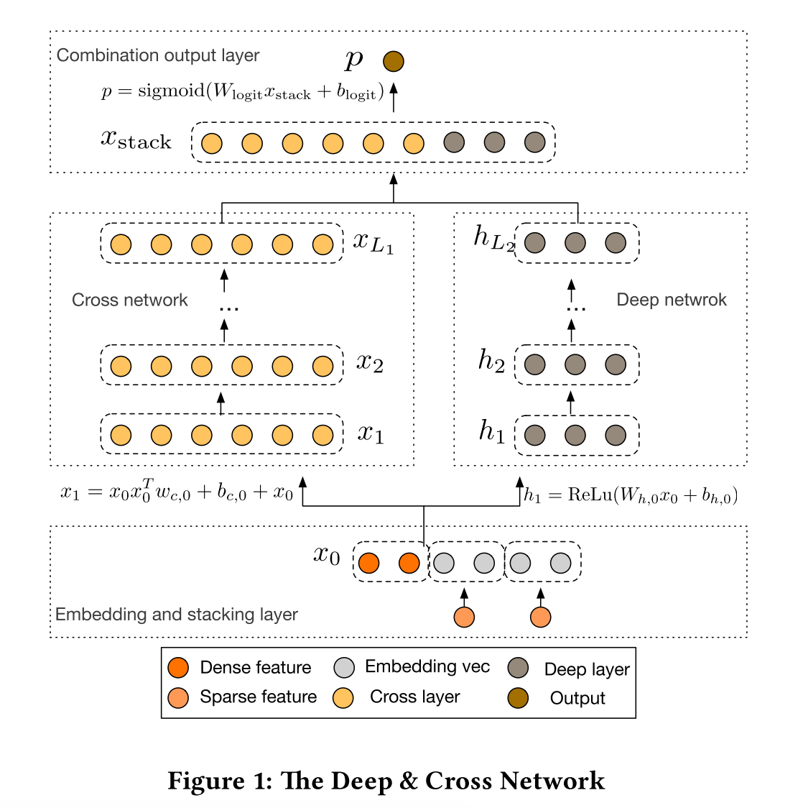

DCN (Deep & Cross Network)
基本结构
我们先看看DCN的整体结构：

下面将其分为三部分去详细讲
Embedding and Stacking Layer
该层将原始特征进行embedding和拼接：对于稀疏特征（一般是onehot出来的），进行embedding；稠密特征直接放进去
所以\(x_0\)为：
\[x_0 = \left[ x^T_{embed, 1},...,x^T_{embed, k},x^T_{dense} \right]\]这里的\(k\)是稀疏特征的数量，注意最后有一个稠密特征的\(X\)
然后，上面提到的embedding实际会乘上特征的值后放入\(x_0\)，即：
\[x_{embed,i} = W_{embed,i}x_i\]Cross Network
这个部分即为DCN的核心部分，我们可以先这么理解，这一层干的事情相当于把DeepFM的FM部分改成了High-Order FM
这一层的公式为：
\[x_{l+1} = x_0 x_l^T w_l + b_l + x_l = f(x_l, w_l, b_l) + x_l\]是不是看起来很像残差网络，\(f(x_l, w_l, b_l)\)就是在拟合残差\(x_{l+1} - x_l\)
下图展示了具体如何得到\(x_{l+1}\)

这里的参数数量是\(d \times L_c \times 2\)，其中，\(d\)是输入特征维度，\(L_c\)是层数
（这里为什么不是\(d \times d \times L_c \times 2\)？是因为，可以先算\(x^T_l w_l\)，得到\(1 \times 1\)的阵）
另外，这一层表达了High-Order FM，第\(l\)层表达了{l+1}-way的FM，具体原因后面详解
Deep Network
这个部分就是几层全连接层，公式为：
\[h_{l+1} = f(W_l h_l + b_l)\]这里的\(f(\cdot)\)是ReLU
这一层的参数数量是\(d \times m + m + \left( m^2 + m \right) \times \left( L_d - 1 \right)\)
Cross Network详解
符号定义：\(w_j\)的第\(i\)个元素为\(w_j^{(i)}\)；对于\(\alpha = \left[ \alpha_1, ..., \alpha_d \right] \in \mathbb{N}^d\)，我们定义\(\lvert\alpha\rvert = \sum\limits^d_{i=1}\alpha_i\)，下面\(\alpha\)的作用就是表示特征的次方和，也就是用来表达特征多项式的度（degree of polynomial term）
下面都先省略bias，即\(b_i = 0\)
Polynomial Approximation
我们先看看变量数为\(d\)，度为\(n\)多项式的公式：
\[P_n(x) = \left\{ \sum\limits_{\alpha} w_{\alpha} x_1^{\alpha_1} x_2^{\alpha_2} ... x_d^{\alpha_d} \mid 0 \leq \lvert\alpha\rvert \leq n, \alpha \in \mathbb{N}^d \right\}\]我们再看到{i+1}-th层：\(x_{i+1} = x_0 x^T_i w_i + x_i\)，定义\(g_l(x_0) = x^T_i w_i\)，得到
\[g_l(x_0) = \left\{ \sum\limits_{\alpha} c_{\alpha} \left( w_0, ..., w_l \right) w_{\alpha} x_1^{\alpha_1} x_2^{\alpha_2} ... x_d^{\alpha_d} \mid 0 \leq \lvert\alpha\rvert \leq l + 1, \alpha \in \mathbb{N}^d \right\}\]（我们先不细究\(c_{\alpha}\)是什么，以及具体如何推导，这个细节请参考论文）
\(g_l(x_0)\)相当于多项式\(P_{l+1}(x)\)，也就是相当于{l+1}-way的FM
Generalization of FM
DCN扩展了FM，能够得到High-Order的FM（由Cross Network的深度决定）
我们回顾一下公式：\(x_{l+1} = x_0 x_l^T w_l + b_l + x_l\)
前面讲了\(x^T_i w_i\)相当于{l+1}-way的FM，而\(x_l\)拟合了0-way到l-way的FM，所以\(x_{l+1}\)就拟合了0-way到{l+1}-way的FM，每增加一层就多拟合了一项高阶FM
（这里我有一点困惑了，\(x^T_i w_i\)相当于{l+1}-way的FM，那又乘了一个\(x_0\)不是就变成{l+2}-way的FM了？所以我觉得是\(x_0 x^T_i w_i\)相当于{l+1}-way的FM）
Efficient Projection
考虑\(\tilde{x} \in \mathbb{R}^d\)作为输入，\(x_p = x_0 \tilde{x}^T w\)作为输出，那么

前半部分产生了\(d^2\)个\(x_i \tilde{x_j}\)的对，注意这里的\(w \in \mathbb{R}^d\)在后半部分都是一列一列的
所以DCN将交叉的部分做了压缩，最终输出的不是\(d^2\)个数，而是\(d\)个数，这样做使整体效率更高
总结
DCN在DeepFM的基础上将FM部分改成了High-Order的FM，高阶的程度取决于Cross Network的深度